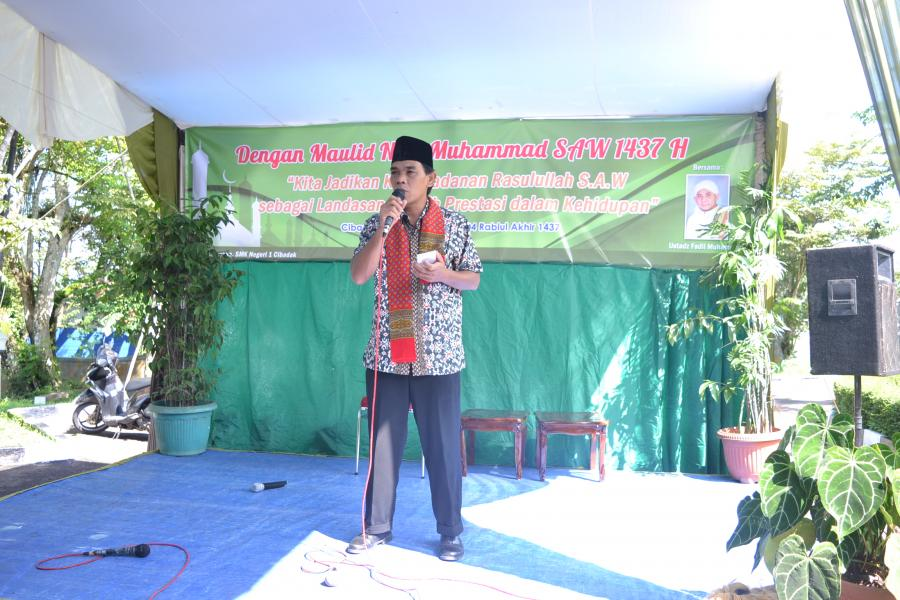
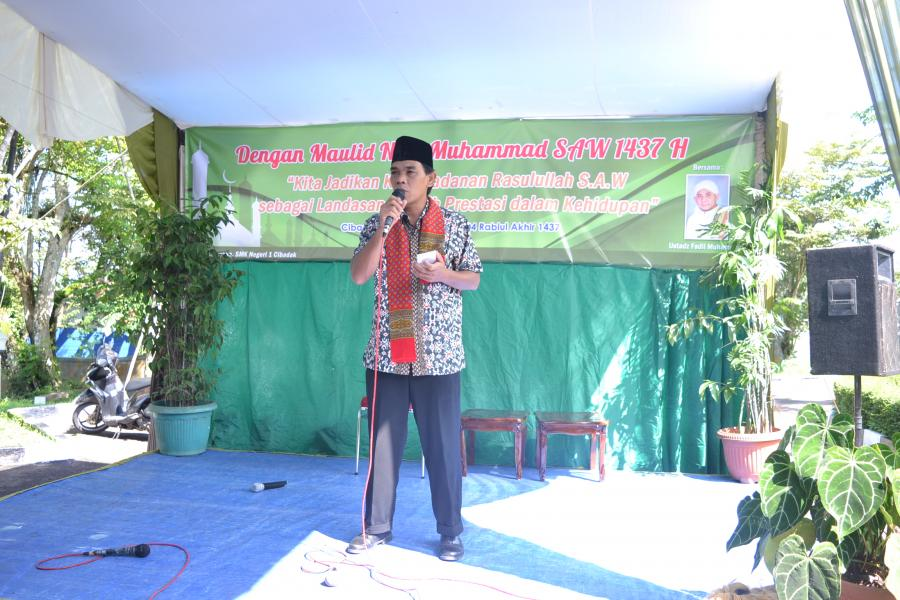

SELAMAT DATANG DI SMKN 1 CIBADAK
Jelajahi & lihat berita serta informasi terbaru SMKN 1 CIBADAK Terkini
Jelajahi & lihat berita serta informasi terbaru SMKN 1 CIBADAK Terkini
- Bob Sadino, CEO Kem Chiks
SMK Negeri 1 Cibadak didirikan pada tanggal 12 Juni 1965 berdasarkan Surat Keputusan Menteri P & K Republik Indonesia No. 69/Dirpl/65 dengan nomenklatur Sekolah Teknologi Menengah Pertanian atau STM Pertanian. SMK Negeri 1 Cibadak merupakan sekolah pertanian negeri pertama di Kabupaten Sukabumi di bawah naungan Depatemen Pendidikan dan Kebudayaan. Saat pertama berdiri sekolah berlokasi di Bojong Masjid Desa,..
13 april 2016 , 03:32 WIB Oleh Neko
Dalam rangka merespon animo masyarakat yang akan menyekolahkan putera-puterinya ke jenjang selanjutnya (SMK), Maka dengan ini SMK Negeri 1 Cibadak sebagai SMK Rujukan Nasional, menerima peserta didik baru tahun pelajaran 2016/2017 Cibadak siap menerima peserta didik Baru dengan 7 (Tujuh) Paket Keahlian yaitu:
11 april 2016 , 00:02 WIB Oleh Poi
SMK Negeri 1 Cibadak tahun ini ditunjuk oleh Pemerintah Provinsi Jawa Barat c.q. Dinas Pendidikan Provinsi Jawa Barat untuk menjadi Tuan Rumah penyelenggaraan Lomba paling bergengsi LKS atau Lomba Kompetensi Siswa ini dengan tujuan memajukan prestasi siswa dan sekolah
11 april 2016 , 21:57 WIB Oleh .win
Batavianet (PT.Aivon Mediatama) posisi: Web/IT programmer, programmer IOS/Android. Syarat: Pria/wanita, Jurusan RPL, TKJ, Multimedia, memiliki kemampuan program PHP/ASP, HTMLM,JAVASCRIPT

(0266) 532510
Jl. Al-Muwahhiddin, Karangtengah, Cibadak, Kab. Sukabumi. Sukabumi 43351


 
